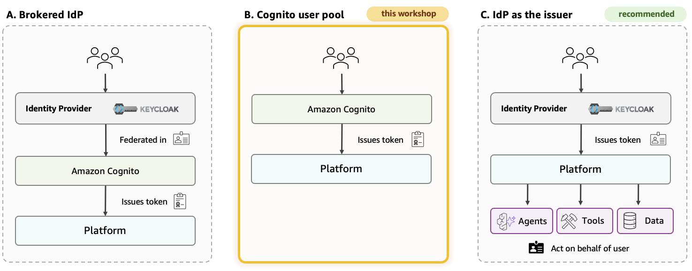
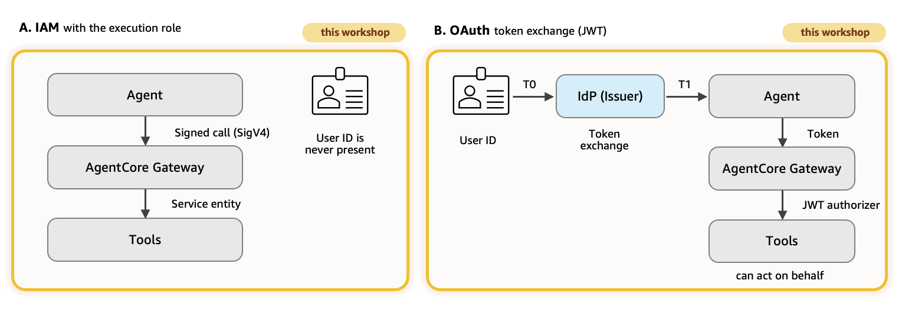
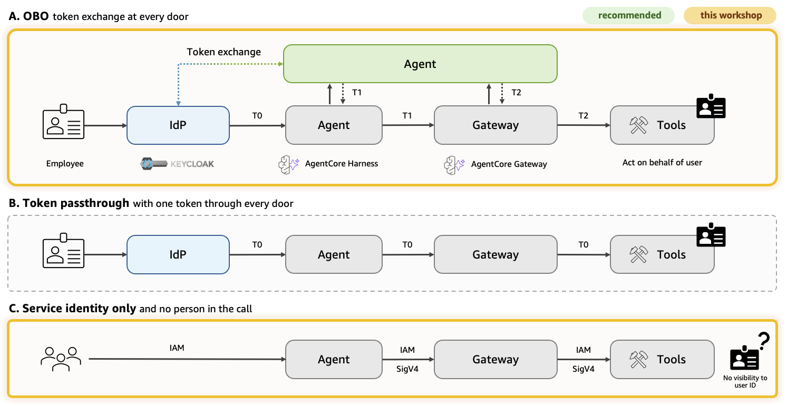

Three identity needs Explain · 10 min
An agent platform has three identity needs:
- People: sign in and receive a token.
- Agents: authenticate with their own execution identity.
- Credentials: store the keys and tokens agents need.
A fourth question hides behind the agent: when it calls a tool for an employee, does the tool learn who that employee is, and can it verify it?
Three goals for an agent's identity
Take the HR assistant. An employee asks for their leave balance; the agent calls the HR system; the HR system must answer for that employee and nobody else. A finance agent never sees the call. Three goals follow, and every decision in this module serves one of them:
| Goal | What it means | In this lab |
|---|---|---|
| Identity propagation | the person the agent acts for reaches the tool, in a token the tool can verify | demonstrated: the on-behalf-of chain T0 → T1 → T2 of decision 2.4, modules 4 and 6 |
| Scope attenuation | least-privilege delegation: each hop receives only what the next resource or task needs, such as a token bound to the next door; not a promise that every hop holds strictly fewer permissions | demonstrated as audience binding: every exchange binds aud to the next door, and Keycloak's audience mappers decide which audiences a client may ask for. Not demonstrated: OAuth scope enforcement. The realm defines no client scopes and no tool checks one; a production design would add scopes per tool, enforced by the resource server that receives them |
| Autonomous workload identity | an agent that runs with no person behind it has an identity of its own, with its own permissions | built: each harness runs as its project's execution role (SigV4) with an AgentCore workload identity; the Dev and Prod agents use only this |
Identity providers support these goals unevenly. Cognito issues tokens but cannot exchange one; Keycloak exchanges only access tokens, so AgentCore Identity must name that subject token type. Check your own provider's token exchange support before you design the chain.
The employee behind the agent
Look again at the middle lane of the figure. The agent signs its tool call with its own role, so the tool sees a service and nothing else. For a tool that answers the same way for everyone, this is fine. For a tool that holds personal data, such as the leave balance of one employee, it is not: the tool has to take the agent's word for whose record it should open. If the agent passes the wrong employee id, by mistake or because a prompt talked it into it, the tool cannot tell. The honest fix is for the tool to learn who asked from something it can verify, and that something is a token.
A token is a signed note. It says who the holder is (the sub claim), whom the note is addressed to (aud, the audience), what it allows (scope), who signed it (iss, the issuer) and until when (exp). A well-built door accepts only a note addressed to it, and that is the single most useful rule in this module. It rules out the obvious shortcut, where the agent simply forwards the employee's own token to every tool it calls. One note would then open every door: a tool that received it could replay it against any other service the employee may use, acting as the employee without the employee's knowledge. Security people call this the confused deputy, and the MCP specification forbids the practice, which it calls token passthrough.
The alternative is on-behalf-of token exchange, standardised as RFC 8693. A service that holds the employee's token hands it to the identity provider and asks for a new one: the same person, but addressed to the next door only. The identity provider checks that this service may ask, that the token it holds was addressed to it, and that the audience it wants is one it may receive. If all three hold, it mints the new token and records that it did. Think of reception in an office building: you show your own badge and receive a visitor pass for one floor, still with your name on it. The pass opens that floor and nothing else, and when you want to visit another floor you go back to reception for another pass.
There are three ways a tool can learn who asked, and the table compares them. The first is what the Dev and Prod agents of this course use: machine to machine, where the tool sees the agent's service identity and never the person. The second is the three-legged flow that consumer apps use, where the person logs in and consents for each tool in a browser. The third is the exchange just described. Which of the three you can use depends on your identity provider, and here Cognito falls short: its token endpoint knows the authorization code, refresh token and client credentials grants, and nothing of RFC 8693. A corporate identity provider that can do the exchange is therefore part of this module: Keycloak in the lab; Okta, Auth0, Entra ID or PingFederate in a company.
| How the tool learns who asked | Who the tool sees | What it costs | Choose when |
|---|---|---|---|
| M2M, machine to machine: client credentials, or IAM SigV4 | the agent's service identity; never the person | nothing beyond the agent's own credential; no user interaction | internal tools where a service identity is enough; the Dev and Prod agents of modules 2 to 7 |
| 3LO, three-legged: authorization code | the person, who logged in and consented to this tool | a browser round trip and a consent screen per person and per tool; tokens to store per user | SaaS tools that require each user's own consent |
| OBO, on-behalf-of token exchange: RFC 8693 | the person, in a token the identity provider minted for this tool alone | an identity provider that implements the exchange; one credential provider per hop; no user interaction | internal tools where the person matters: the HR API of modules 4 and 6 |
The employees' login: Keycloak in this lab
Where the employees sign in is not a separate design decision: in production it is the company's existing identity provider, such as Okta or Entra ID, and the platform's own sign-in can be brokered to it (decision 2.1). This lab still needs a login that can exchange tokens. Cognito's token endpoint knows the authorization code, refresh token and client credentials grants, and not RFC 8693, and an event account has no SaaS tenant, so workshop apply 2 runs Keycloak as the stand-in.
This workshop. Personas keep signing in at Cognito (2.1). Employees get a second login, Keycloak 26.8.1, run by us: the point is a real RFC 8693 token exchange, which Cognito cannot do, and a lab account has no SaaS tenant. It has three parts:
- Task: one Fargate task in a small public VPC of its own, outside the private landing zone.
- Door: an internal load balancer, exposed over HTTPS by an API Gateway HTTP API: a free certificate, no domain, a stable issuer.
- Realm:
anycompany, imported fromfoundation/keycloak/realm.jsonat every start.
The realm has four clients:
hr-portal: public, password grant; the HR portal's login. Its tokens carry the audiencehr-agent.hr-agent: confidential, token exchange on; an audience mapper lets it mint tokens forhr-obo-gateway.hr-obo-gateway: confidential, token exchange on; its mapper mints tokens forhr-tools-api.hr-tools-api: an audience only.
The audience mappers are the rule book: a token can only be exchanged by a client named in its aud, and a client can only ask for audiences its own mappers mint. Every exchanged token keeps sub and employee_id, gets a new aud, and names the asking client in azp.
Shortcut: Keycloak runs in development mode and keeps its data in the task. After a task restart the realm comes back from the file but the employee does not; run workshop apply 2 again.
Production path. Okta or Entra ID as the employees' issuer, with MFA and lifecycle owned by the identity team. The design of the chain carries over, but the switch is not a URL change: validate that the new provider supports RFC 8693 and the grants you need, which clients may exchange for which audiences, and the claims, audiences and scopes each hop receives.
Who you are during the day
You wear four hats, with three signed-in personas:
| Hat | What you do | Sign-in |
|---|---|---|
| Platform architect | Make the Explain and Discuss decisions | none |
| Platform admin | Create projects, approve catalogue records, set policies and caps | admin |
| Agent developer | Write blueprints, deploy to Dev, submit releases | developer |
| Domain approver | Approve or reject releases; promote to Prod | approver |
Sign in once. Then use Switch persona in the user menu to change roles.
One more person appears in modules 2, 4 and 6: Alex Rivera, employee E1001 in the sample data. Alex is not a hat you wear. Alex signs in at the corporate IdP, not at Cognito, and workshop obo performs that sign-in to show what an agent can do on an employee's behalf.
Decisions Design · 10 min
2.1Who signs people in?

| Option | Pros | Cons | Choose when |
|---|---|---|---|
| A · Corporate IdP (Okta, Entra ID, Keycloak) federated into Cognito, "brokered" | single sign-on; one token issuer for every component | one more hop to configure | an enterprise with an IdP |
| This workshop B · Cognito user pool, local users and groups |
works on day one; simple | a separate user store; no single sign-on | a pilot or a workshop |
| Recommended C · The IdP as the direct issuer, no Cognito |
fewer parts | every component must trust the IdP; tied to one IdP | the IdP team owns tokens end to end |
This workshop. Cognito has three groups, and the platform API maps each group to a role:
platform-admins, roleadmin: platform settings and catalogue approval.agent-developers, roledeveloper: build agents and submit releases.approvers, roleapprover: approve releases and promote them.
The three persona users are named after their roles, admin, developer and approver: that is what you type at sign-in, while the group names are what you see in the Cognito console. The API checks the token's group on every write. Only the Domain approver can approve a release; the Platform admin cannot. This is separation of duties. Groups already travel in the token, so no separate user-role attribute is needed.
These groups are the platform's own users. Employees who talk to the HR assistant never touch the platform console; they sign in at the company login, which this lab runs as Keycloak (the employees' login).
Switch persona is a workshop shortcut with two steps:
POST /me/switchsigns in the selected persona using its stored password.- The browser receives that persona's token; API group checks still apply.
Production path. Each person receives their own IdP token. The workshop lets any signed-in persona switch to any other; production must remove that shortcut. Use a corporate IdP brokered through Cognito, MFA and shorter token lifetimes.
2.2How do agents authenticate to the tool gateway?
Both are used, by different agents and at different gateways: A for the Dev and Prod harnesses, B for the on-behalf-of twin.

| Option | Pros | Cons | Choose when |
|---|---|---|---|
| This workshop · Dev and Prod harnesses A · IAM SigV4 with the agent's execution role |
no token plumbing; project and environment boundary | the person does not reach the tool | internal tools; a service identity is enough |
| This workshop · on-behalf-of twin B · An OAuth token (JWT) for the person |
the person's identity can reach the tool | an issuer, a token exchange, more setup | the tool must act for the person |
This workshop. Two callers, two doors, the same HR tools behind them:
| Caller | Gateway and its inbound check | How the tool is then reached |
|---|---|---|
A · hr_assistant_dev, hr_assistant_prod, as the agent role agent-platform-proj-hr-assistant-<env>-agent | hr-assistant-<env>-gw: IAM, InvokeGateway on hr-assistant-<env>-gw* | the gateway's own role, …-<env>-gateway, invokes the Lambda tools and the knowledge base |
B · hr_assistant_dev_obo, with token T1 | hr-assistant-dev-gw-obo: CUSTOM_JWT, audience hr-obo-gateway | the gateway exchanges T1 for T2 and calls the HR API (2.4) |
A template creates one role pair per project and environment, an agent role and a gateway role. The agent role can invoke only its own gateways; Dev cannot reach Prod.
Production path. Use JWTs when tools must act as the employee. Keep IAM for internal tools where a service identity is enough. Decision 2.4 follows the person along route B.
{
"Effect": "Allow",
"Action": "bedrock-agentcore:InvokeGateway",
"Resource": "arn:aws:bedrock-agentcore:us-east-1:111122223333:gateway/hr-assistant-dev-gw*"
}The agent role template has two boundaries:
- The gateway name pattern scopes access to
hr-assistantin Dev. - No
bedrock:InvokeModel: model access uses a model-gateway key instead.
2.3How does the employee's identity reach the tools?

| Option | Pros | Cons | Choose when |
|---|---|---|---|
| Recommended where the person mattersThis workshop · on-behalf-of twin A · On-behalf-of token exchange: a new token for the same person at every door (RFC 8693) |
each door receives a token addressed to it alone; the identity provider decides and records every exchange; no user interaction | an identity provider that implements RFC 8693; a credential provider per hop; two more round trips per tool call | the person must reach the tool: HR, finance, ticketing |
| B · Token passthrough: the agent forwards the employee's own token to every tool | nothing to exchange | one token opens every door: a tool can replay it against any other service the employee may use (the confused deputy); forbidden by the MCP specification | never; a local test at most |
| This workshop · Dev and Prod agents C · A service identity only: the tool sees the gateway role |
no token plumbing; one IAM boundary | the tool must trust the employee_id argument; it cannot tell who asked |
internal tools where the person does not matter |
This workshop. The Dev and Prod agents use C. The on-behalf-of twin uses A: the token is exchanged at every door, and AgentCore Identity is the broker. The chain has three tokens:
- T0: the employee signs in at Keycloak through
hr-portal: sub Alex, employee_id E1001, aud hr-agent, azp hr-portal. - T1: the on-behalf-of harness (module 6) accepts T0 and, before its first tool call, has AgentCore Identity exchange it through the provider kc-hr-agent: same sub and employee_id, aud hr-obo-gateway, azp hr-agent.
- T2: the on-behalf-of gateway (module 4) accepts T1 and repeats the step through kc-hr-obo-gateway: aud hr-tools-api, azp hr-obo-gateway. API Gateway's JWT authorizer accepts T2, and the tool knows who asked.
Keycloak decides each exchange: the asking client must be named in the token's audience and may only request audiences its mappers mint. Each credential provider is a CustomOauth2 provider with the realm's discovery URL, a client id and secret, and on-behalf-of mode TOKEN_EXCHANGE without an actor token. Two parameters go with every exchange. The first, the subject token type access_token, is there because Keycloak accepts no other kind of subject token and AgentCore Identity would otherwise send jwt. The second, the audience, is optional for Keycloak: it names the door the new token is for, and Keycloak checks it against the audiences the asking client's mappers may mint. The agent code and the gateway never see a secret; they name a provider.
workshop obo performs the first exchange by hand so you can read T0 and T1 side by side. The gateway hop and the harness hop join it in modules 4 and 6.
Production path. The exchange at every door is the production pattern; the gap is what the tool does with the identity. The HR tool still reads the employee_id argument. Read it from the token instead, or attach the on-behalf-of gateway to a policy engine and let a Cedar rule compare token and argument: row-level security, see module 4. No layer checks an OAuth scope today: each token is bound by its audience only. Replacing Keycloak with Okta or Entra ID needs the same validation as above: RFC 8693 and grant support, exchange permissions per client, and the claims, audiences and scopes each hop receives.
Your design record, module 2
module_2:
inputs: # read by: workshop apply 2 and workshop obo
employee: E1001 # the employee who signs in at the corporate IdP; the on-behalf-of chain acts for this person
decisions:
people: {workshop: cognito-groups} # 2.1: three groups are the three personas; reference: corporate IdP brokered
agents: {workshop: iam-sigv4 + obo-jwt} # 2.2: SigV4 for Dev and Prod; a realm token for the on-behalf-of twin
secrets: {workshop: token-vault} # 2.3: API key per agent, environment and model; OAuth2 providers for the exchange
user_identity: {workshop: obo-token-exchange} # 2.4: RFC 8693 at each hop through Keycloak, brokered by AgentCore IdentityBold keys are apply inputs. The employee is the one input of this module: any id from scenario/data/employees.json works, and the examples on this page assume the default, E1001, Alex Rivera.
Hands-on 20 min
- command
workshop apply 2does two things. First, in your existing Cognito pool: it creates the three persona users and groups, signs in as each one, and prints the API role each is mapped to. It also tests a deliberate 403 when the Agent developer tries a Platform admin action (you’ll revisit this in step 5), and prints the gateway name pattern Module 3 will use forhr-assistantin Dev (step 6). Second, it deploys the AgentPlatform-Idp stack: Keycloak, the employees’ corporate login, running on Fargate, plus the HR API used in Module 4. Once the stack is ready, it creates the demo employee (Alex Rivera, E1001) and registers the two OAuth2 credential providers (kc-hr-agent,kc-hr-obo-gateway) in AgentCore Identity. Later steps use these providers for the on-behalf-of token exchange. First run: about 8 minutes (7 of those for the stack). Re-runs: about a minute.--no-deployskips the stack deployment. Expected output lines below. - screenThe apply output prints the Keycloak admin console address (the IdP URL plus
/admin/master/console/#/anycompany/clients). The sign-in screen asks for a username and a password: the username isadmin, Keycloak's own bootstrap administrator (not the platform'sadminpersona from the Cognito pool, whose password is different), and the password is the value of the Secrets Manager secretagent-platform/keycloak-admin. Read it in the Secrets Manager console (open the secret, Retrieve secret value, then the Plaintext tab; it is one string, not key/value pairs) or from your terminal withaws secretsmanager get-secret-value --secret-id agent-platform/keycloak-admin --query SecretString --output text. Check three things in realm anycompany: Clients lists hr-portal, hr-agent, hr-obo-gateway and hr-tools-api; hr-agent has standard token exchange on and the audience mapper aud-hr-obo-gateway in its dedicated scope; Users shows alex.rivera with employee_id = E1001. Then open the AgentCore console, Identity, OAuth clients: kc-hr-agent and kc-hr-obo-gateway with the realm's discovery URL. - command
workshop obo: sign Alex in through the public client hr-portal and print T0's claims (sub, preferred_username alex.rivera, employee_id E1001, azp hr-portal, iss, aud ['hr-agent']). Under the exchange by hand it performs the first exchange through kc-hr-agent, as AgentCore Identity will for the harness, and prints T1: same sub and employee_id, aud ['hr-obo-gateway'], azp hr-agent. A harness has a workload identity of its own; your terminal has none, so the command creates a scratch one,workshop_obo_demo, binds T0 to it (GetWorkloadAccessTokenForJWT) and asks for the exchange (GetResourceOauth2Token);workshop cleanupremoves it in module 7. Your AWS credentials must allow those AgentCore Identity calls. The command stops there: the gateway hop needs module 4's gateway and the harness hop module 6's agent. - screenUse
uv run python scripts/doctor.py --show-passwordsto see the passwords (three personas and the employee). Sign in once, then use Switch persona (top-right user menu) to try all three roles. - screenAs Agent developer, Create domain and Governance are hidden. The apply command also tests the API: developer
POST /domainsreturns 403 FORBIDDEN. Module 6 shows the release-approval restriction. - fileOpen the SDK's
templates/agent_role.json. Find the gateway name pattern. - recordRead the module 2 record entries in
design-record.yamland compare each with the option marked Recommended on this page.
# workshop apply 2: the realm as Keycloak imported it, the employee, the two credential providers (lines shortened)
client hr-portal public, direct access grants -> aud ['hr-agent']
client hr-agent confidential, token exchange -> aud ['hr-obo-gateway']
client hr-obo-gateway confidential, token exchange -> aud ['hr-tools-api']
client hr-tools-api confidential (audience only)
user alex.rivera (E1001, Alex Rivera): password in the users secret under `employee`
kc-hr-agent client hr-agent TOKEN_EXCHANGE, actor token NONE
kc-hr-obo-gateway client hr-obo-gateway TOKEN_EXCHANGE, actor token NONE
# workshop obo, as far as the chain exists after module 2 (lines shortened)
== 1 the employee signs in at Keycloak: alex.rivera (E1001), client hr-portal
T0, the employee's own token (what the HR portal would hold; audience hr-agent)
sub 3c6f... # Alex's id in the realm; the same at every hop
preferred_username alex.rivera
employee_id E1001
azp hr-portal
iss https://.../realms/anycompany
aud ['hr-agent']
== 2 the exchange by hand: what AgentCore Identity does for the harness before a tool call
CreateWorkloadIdentity workshop_obo_demo -> GetWorkloadAccessTokenForJWT(T0) -> GetResourceOauth2Token(ON_BEHALF_OF_TOKEN_EXCHANGE, kc-hr-agent, audience hr-obo-gateway)
exchanged in 2.0 s (Keycloak made the decision; AgentCore Identity held the client secret)
T1, same person, minted for the gateway (azp = hr-agent, the client that asked)
sub 3c6f... # unchanged
employee_id E1001
azp hr-agent
aud ['hr-obo-gateway']
OK the employee's token can be exchanged on alex.rivera's behalf; nothing downstream accepts it yet
module 4 adds the gateway and the HR API that take T1; module 6 adds the agent that does all of this for the employeeRead the two tokens as a pair. The sub and the employee_id did not change, so this is still Alex. The audience changed from hr-agent to hr-obo-gateway, so the new note opens the gateway's door and no other. And azp changed from hr-portal to hr-agent, which is Keycloak's record of who asked for the exchange. The real values are longer than shown here; the sub is the id Keycloak gave the user, and it changes if the employee is ever re-created. The OK line is the sign the step worked; the scratch workload identity stands in for the harness's own, which only the harness can use.
Read more: brokered or direct identity; AgentCore Identity guide; RFC 8693; MCP security best practices (why passthrough is forbidden); Keycloak token exchange.
The platform after module 2
Identity is decided here, but built in three stages:
- Module 2: three Cognito groups and three users; two OAuth2 credential providers in AgentCore Identity.
- Module 3: project and environment roles.
- Module 5: model keys in the token vault.
Outside the landing zone, the stack AgentPlatform-Idp adds a second, deliberately simple VPC (10.1.0.0/16: two public subnets behind an internet gateway, no NAT and no endpoints, the reverse of the landing zone's isolated subnets, because a corporate IdP is reached over the internet, by AgentCore Identity and API Gateway alike), Keycloak on one Fargate task behind an internal load balancer, two HTTP APIs (the HTTPS door to Keycloak, and the HR API with its JWT authorizer), the HR API Lambda for module 4, and three Secrets Manager secrets: agent-platform/keycloak-admin (the admin password) and the client secrets agent-platform/keycloak-client-hr-agent and agent-platform/keycloak-client-hr-obo-gateway, which Keycloak resolves when it imports the realm and which workshop apply 2 copies into the two credential providers; that is where the "same vault" of decision 2.3 gets its values. The stack also publishes its URLs, names and secret ARNs under /agent-platform/idp/* and /agent-platform/hr-api/* in SSM Parameter Store, the account's address book the workshop CLI reads, so modules 4 and 6 find the IdP without you copying anything. The figure shows the platform side; the IdP sits outside it, as a company's Okta or Entra ID would.

kc-hr-agent and kc-hr-obo-gateway; the model keys follow in module 5); at the bottom of the figure, the IdP stack: Keycloak and its load balancer in a small VPC of their own behind an API Gateway door, and the HR API with its Lambda in the resource layer (neither sits in a VPC). The API maps token groups to platform roles; employees sign in at Keycloak. Dev and Prod agents use IAM and vault credentials; module 6's on-behalf-of agent presents the employee's token instead. Click to open full size.Glossary
- IdP, SSO
- Identity provider and single sign-on: the company login, such as Okta, Entra ID or Keycloak.
- Cognito
- AWS sign-in service with user pools, groups and signed tokens.
- Token
- Signed note saying who the caller is (sub), whom it is for (aud), what it allows (scope), who signed it (iss) and until when (exp). Cognito's also carries the group.
- Claim
- One field inside a token: sub, aud, iss, exp, azp (the client that asked for it) or a custom one such as employee_id.
- Audience
- The aud claim: the door a token is addressed to. A well-built door accepts only tokens addressed to it.
- Brokered sign-in
- The corporate IdP authenticates the user; Cognito issues the token.
- SigV4
- AWS request signing with IAM credentials. Here, agents use their execution role.
- Execution role
- IAM role that defines what an agent may access.
- Token vault
- AgentCore Identity's store for API keys and OAuth credentials.
- M2M
- Machine-to-machine: a system calls a system with its own identity; the person is not in the call.
- Token exchange, OBO
- On-behalf-of: a service hands the person's token to the IdP and receives a new one for the same person, addressed to the next door only (RFC 8693).
- Keycloak
- Open-source identity provider; the workshop's stand-in for the company login, in a small VPC of its own outside the landing zone.
- Realm
- Keycloak's unit of isolation: its own users, clients and signing keys. Ours is anycompany.
- Client
- An application registered with the IdP: public, with no secret (the HR portal), or confidential, holding a secret (the agent and the gateway).